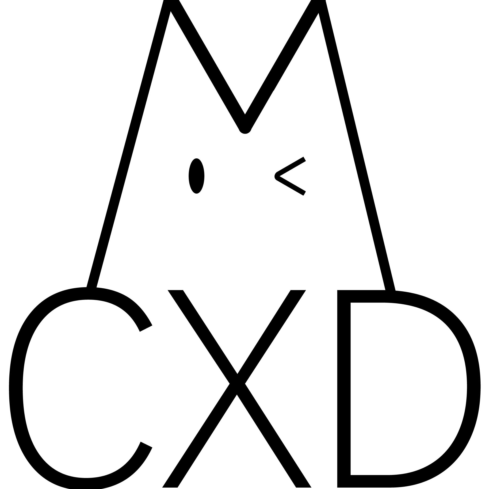

内容仅供参考，更多精彩即将上线！
爱运动 · 爱自学 · 半 I 半 E

我是 CXD 一名充满活力的计算机工程学院 2026 级新生。从高中起，我就热爱运动与挑战，曾担任 体育委员 和 生物社社长。
我喜欢用镜头记录生活中的每一个精彩瞬间——无论是骑行路上的风景、跑道上的汗水，还是与朋友们一起打羽毛球、练习跆拳道的时光。
高中期间，我参与多项校内外活动并获得荣誉，包括高空护蛋比赛、生物社义卖活动等。欢迎通过 B站 和抖音关注我，一起见证我的成长与热爱。
点击卡片，了解更多关于我的故事。
骑行、跑步、羽毛球、跆拳道
B站 & 抖音内容分享
比赛获奖与活动经历
编程、设计、沟通